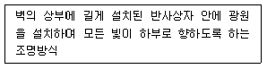
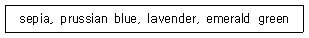
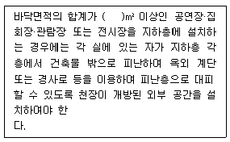
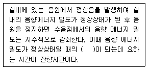
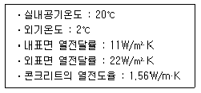

실내건축기사(구) (2014-09-20 기출문제)
1과목: 실내디자인론
1. 약동감과 생동감 있는 분위기를 표현하는데 가장 적합한 선의 종류는?
- 곡선
- 사선
- 수평선
- 수직선
(정답률: 77%)

2. 다음 중 유니버셜 공간의 개념적 설명으로 가장 알맞은 것은?
- 상업공간
- 표준화된 공간
- 모듈이 적용된 공간
- 공간의 융통성이 극대화된 공간
(정답률: 75%)
3. 개구부에 관한 설명으로 옳지 않은 것은?
- 가구배치와 동선계획에 영향을 미친다.
- 고정창은 크기와 형태에 제약없이 자유로이 디자인 할 수 있다.
- 측창은 같은 크기의 천창보다 3배 정도의 많은 빛을 실내로 유입시킬 수 있다.
- 회전문은 출입하는 사람이 충돌할 위험이 없으며 방풍실을 겸할 수 있는 장점이 있다.
(정답률: 85%)
4. 침대의 종류 중 퀸(queen)의 크기로 가장 알맞은 것은?
- 1200mm×2000mm
- 1350mm×2000mm
- 1500mm×2000mm
- 2000mm×2000mm
(정답률: 84%)
5. 상업공간의 매장내 진열장(show case)을 배치 계획할때 가장 중점적으로 고려해야 할 사항은?
- 진열장의 수
- 조명의 조도
- 수직동선 처리
- 고객동선의 원활
(정답률: 88%)
6. 공사 완료 후 디자인 책임자가 시공이 설계에 따라 성공적으로 진행되었는지의 여부를 확인할 수 있는 것은?
- 계약서
- 시방서
- 감리보고서
- 체크리스트
(정답률: 76%)
7. 주방 작업대의 배치유형 중 ㄷ자형에 관한 설명으로 옳은 것은?
- 인접한 세 벽면에 작업대를 붙여 배치한 형태이다.
- 두 벽면을 따라 작업이 전개되는 전통적인 형태이다.
- 작업동선이 길고 조리면적은 좁지만 다수의 인원이 함께 작업할 수 있다.
- 가장 간결하고 기본적인 설계 형태로 길이가 4.5m 이상 되면 동선이 비효율적이다.
(정답률: 75%)
8. 다음 설명에 알맞은 건축화조명방식은?

- 코퍼조명
- 광창 조명
- 코니스 조명
- 광천장 조명
(정답률: 79%)
9. 디자인 원리 중 비례에 관한 설명으로 옳지 않은 것은?
- 황금비례는 1 : 1.618의 비율을 갖는다.
- 일반적으로 A : B로 표현되며 두 개만의 양적 비교를 의미한다.
- 황금비례는 고대 그리스인들이 창안한 기하학적 분할방식이다.
- 디자인에서 형태의 부분과 부분, 부분과 전체 사이의 크기, 모양 등의 시각적 질서, 균형을 결정하는데 사용된다.
(정답률: 64%)
10. 실내공간을 구성하는 기본 요소 중 벽에 관한 설명으로 옳지 않은 것은?
- 선형의 수직요소로 크기, 형상을 가지고 있다.
- 수평방향을 차단하여 공간을 형성하는 기능을 갖는다.
- 시각적 대상물이 되거나 공간에 초점적 요소가 되기도 한다.
- 실내 분위기를 형성하여 색, 패턴, 질감, 조명 등에 의해 그 분위기가 조절된다.
(정답률: 59%)
11. 점에 관한 설명으로 옳지 않은 것은?
- 면의 한계, 면들의 교차에서 주로 나타난다.
- 기하하적으로 위치나 장소만을 갖는 것으로 간주된다.
- 하나의 점은 관찰자의 시선을 화면 안의 특정한 위치로 이끈다.
- 화면 안에 있는 두 점의 크기가 같은 경우 주의력은 균등하게 작용한다.
(정답률: 77%)
12. 실내디자인의 영역에 관한 설명으로 가장 알맞은 것은?
- 건축 구조물에 의해 형성된 내부 공간만을 대상으로 한다.
- 건축물의 구조 및 재료에 대한 지식을 가지고 구조적인 해석을 할 수 있어야 한다.
- 실내디자인의 영역은 건축물의 실내 공간을 주 대상으로 하며, 도시환경이나 가로공간에서도 발견된다.
- 실내디자인은 건축 공간의 심리적 문제 해결이나 독자적인 표현을 대상으로 하며 건축물의 매스나 형태 디자인을 주 영역으로 한다.
(정답률: 77%)
13. 다음 중 르 꼬르뷔제(Le Corbusier)의 “모듈러(Modulor)”와 가장 관련이 깊은 디자인 원리는?
- 리듬
- 비례
- 대비
- 강조
(정답률: 83%)
14. 다음 중 주거공간의 조닝(zoning)의 방법과 가장 거리가 먼 것은?
- 융통성에 의한 구분
- 주 행동에 의한 구분
- 사용시간에 의한 구분
- 프라이버시 정도에 따른 구분
(정답률: 72%)
15. 디자인 원리 중 디자인 대상의 전체에 미적 질서를 부여하는 것으로 변화와 함께 모든 조형에 대한 미의 근원이 되는 것은?
- 리듬
- 통일
- 강조
- 대비
(정답률: 82%)
16. 전시공간의 평면 형태에 관한 설명으로 옳지 않은 것은?
- 직사각형은 공간 형태가 단순하고 분명한 성격을 지니기 때문에 지각이 쉽다.
- 부채꼴형은 관람자의 자유로운 선택이 가능하므로 대규모 전시공간에 적합하다.
- 원형은 고정된 축이 없어 안정된 상태에서 지각이 어려워 방향감각을 잃을 수도 있다.
- 자유형은 형태가 복잡하여 전체를 파악하기 곤란하므로 큰 규모의 전시공간에는 부적당하다.
(정답률: 64%)
17. 의자에 관한 설명으로 옳지 않은 것은?
- 스툴은 등받이와 팔걸이가 없는 형태의 보조의자이다.
- 오토만은 라운지 체어에 비해 등받이의 각도가 원만하다.
- 풀업 체어는 필요에 따라 이동시켜 사용할 수 있는 간이 의자이다.
- 라운지 체어는 비교적 크기가 큰 의자로 편하게 휴식을 취할 수 있는 안락의자이다.
(정답률: 79%)
18. 주택 부엌에서 작업삼각형(Work Triangle)의 꼭지점에 해당하지 않는 것은?
- 냉장고
- 가열대
- 배선대
- 개수대
(정답률: 84%)
19. VMD(visual merchandising)에 관한 설명으로 옳지 않은 것은?
- 다른 상점과 차별화하여 상업공간을 아름답고 개성있게 하는 것도 VMD의 기본 전개방법이다.
- VMD의 구성요소 중 VP는 점포의 주장을 강하게 표현하며 IP는 구매시점상에 상품정보를 설명한다.
- 상점의 영업방침을 기본으로 고객의 시각에 비치는 파사드만을 상점의 개성에 따라 통일된 이미지를 만들어 전개한다.
- 쇼윈도우와 VP는 하나의 통일성 있는 방법으로 상점 정책에 맞게 표현되도록 한다.
(정답률: 75%)
20. 질감에 관한 설명으로 옳지 않은 것은?
- 거친 질감은 가벼운 느낌을 주며 같은 색체라도 강하게 느껴진다.
- 효과적인 질감 표현을 위해서는 색채와 조명을 동시에 고려해야 한다.
- 질감의 선택에서 중요한 것은 스케일, 빛의 반사와 흡수, 촉감 등이다.
- 좁은 실내 공간을 넓게 느껴지도록 하기 위해서는 표면이 곱고 매끄러운 재료를 사용하는 것이 좋다.
(정답률: 87%)
2과목: 색채학
21. 다음 중 화려하게 느껴지는 색은?
- 채도가 높은 색
- 채도가 낮은 색
- 낮은 명도의 색
- 중간 명도의 색
(정답률: 89%)
22. 아파트 건축물의 색채 기획 시 고려해야 할 사항이 아닌 것은?
- 개인적인 기호에 의하지 않고 객관성이 있어야 한다.
- 주변에서 가장 부각될 수 있게 독특한 색채를 사용한다.
- 전체적으로 질서가 있어야 하며 적당한 변화가 있어야 한다.
- 주거만을 위한 편안한 색채 디자인이 되어야 한다.
(정답률: 87%)
23. 7월 탄생석(보석)의 색으로 힘, 권력 등을 상징하고, 심장질환 치료 등의 효과와 의미를 갖는 색은?
- 초록
- 빨강
- 파랑
- 보라
(정답률: 79%)
24. 채도(彩度, Chroma)란?
- 색채의 이름
- 색채의 선명도
- 색채의 밝기
- 색채의 배합
(정답률: 84%)
25. 다음 중 노란색과 배색하였을 때 가장 부드러운 느낌으로 조화되는 색은?
- 회색
- 빨강
- 보라
- 남색
(정답률: 62%)
26. 다음 중 순색의 채도가 높은 것끼리 짝지어진 것은?
- 노랑, 주황
- 빨강, 초록
- 연두, 청록
- 초록, 파랑
(정답률: 72%)
27. 한국의 전통색 중 오정색이 아닌 것은?
- 빨강
- 파랑
- 검정
- 녹색
(정답률: 74%)
28. 눈 - 카메라의 구조 - 역할이 옳게 연결된 것은?
- 각막 - 렌즈 - 핀트 조절
- 홍채 - 조리개 - 빛을 굴절시키고 초점을 만듦
- 망막 - 필름 - 상이 맺히는 부분
- 수정체 - 렌즈 - 빛의 강약에 따라 동공의 크기 조절
(정답률: 67%)
29. 밝은 태양 아래에 있는 석탄은 어두운 곳에 있는 백지보다 빛을 많이 반사하고 있는데도 불구하고 석탄은 검게, 백지는 희게 보이는 현상은?
- 비시감도
- 명암순응
- 시감 반사율
- 항상성
(정답률: 69%)
30. 문·스펜서의 면적효과에 관한 설명 중 틀린 것은?
- N5 순응점을 중심으로 한다.
- 균형점(balance point)에 의해서 배색의 심리적 효과가 결정된다.
- 순응점을 중심으로 높은 채도의 색은 넓게 배색하는 것이 조화롭다.
- 순응점으로부터 지정된 색까지의 입체적 거리는 스칼라 모멘트이다.
(정답률: 74%)
31. 먼셀 기호로 표시할 때 5R 4/10 이라고 표기한 색에 대한 설명이 틀린 것은?
- 색상은 5R 이다.
- 명도는 4 이다.
- 채도는 4/10 이다.
- 5R 4의 10 이라고 읽는다.
(정답률: 88%)
32. [보기]는 어떤 기준의 색명인가?

- 계통색명
- 표준색명
- 관용색명
- 일반색명
(정답률: 78%)
33. 디지털 색채 체계에 대한 설명 중 옳은 것은?
- RGB 색공간에서 각 색의 값은 0～100%로 표기한다.
- RGB 색공간에서는 모든 원색을 혼합하면 검정색이된다.
- L*a*b 색공간에서 L*은 명도를, a*는 빨강과 초록을, b*는 노랑과 파랑을 나타낸다.
- CMYK 색공간은 RGB 색공간보다 컬러의 범위가 넓어 RGB데이터를 CMYK 데이터로 변환하면 컬러가 밝아진다.
(정답률: 74%)
34. 오스트발트의 등색상면에서 밝은 → 어두운 순서대로 나열된 것은?
- pn - ig - ca
- li - ge - ca
- ec - nl - ge
- ca - ec - ig
(정답률: 60%)
35. 광원의 온도가 높아짐에 따라 광원의 색이 변한다. 색온도 변화의 순으로 옳게 짝지어진 것은?
- 빨간색, 주황색, 노란색, 파란색, 흰색
- 빨간색, 주황색, 노란색, 흰색, 파란색
- 빨간색, 주황색, 파란색, 보라색, 흰색
- 빨간색, 주황색, 노란색, 파란색, 보라색
(정답률: 77%)
36. 컬러 매니지먼트에 대한 설명 중 틀린 것은?
- 화상이나 그래픽의 컬러를 정확하게 재현하게끔 데이터를 변환하기 위해서 그와 관련되는 모든 주변기기의 컬러공간을 조정하는 것이다.
- 하나의 출력 프로세스를 다른 출력 장치 상에서 볼수 있게끔 하는 것이다.
- 컬러 매니지먼트 시스템에 의해서 컬러 재현의 반복 및 예측이 가능한 것은 아니다.
- 컬러 매니지먼트 시스템은 초심자라도 쉽게 이용할수 있도록 간단해야 한다.
(정답률: 73%)
37. 오스트발트 색입체를 명도를 축으로 하여 수직으로 절단했을 때의 단면 모양은?
- 삼각형
- 타원형
- 직사각형
- 마름모형
(정답률: 72%)
38. 미국의 색채학자 저드(D.B.Judd)의 일반적인 4가지 색채조화의 원리가 아닌 것은?
- 유사성의 원리
- 명료성의 원리
- 대비성의 원리
- 친근성의 원리
(정답률: 67%)
39. NCS 색채계에 대한 설명이 옳은 것은?
- 독일 색채 연구소에서 만들어졌다.
- NCS 표기법은 미국에서 많이 사용되고 있다.
- 기본적인 색은 Y, R, G의 3색이다.
- 보편적인 자연색을 기본으로 한 색채계이다.
(정답률: 41%)
40. 점진적인 변화를 주어 리듬감을 얻는 배색법은?
- 액센트
- 그라데이션
- 세퍼레이션
- 도미넌트
(정답률: 85%)
3과목: 인간공학
41. 다음 중 인체의 각 기관계와 해당하는 기관이 올바르게 연결된 것은?
- 순환계 : 신경
- 호흡기계 : 림프관
- 호흡기계 : 후두
- 순환계 : 위장
(정답률: 75%)
42. 시야의 넓이는 물체의 색깔에 따라 달라지는데 다음 중 시야가 좁아지는 색에서부터 넓어지는 색으로 올바르게 나열한 것은?
- 녹색 ＜ 적색 ＜ 청색 ＜ 황색 ＜ 백색
- 녹색 ＜ 황색 ＜ 청색 ＜ 적색 ＜ 백색
- 백색 ＜ 적색 ＜ 청색 ＜ 황색 ＜ 녹색
- 백색 ＜ 청색 ＜ 황색 ＜ 적색 ＜ 녹색
(정답률: 63%)
43. 다음 중 인체에서의 열교환 과정에서 대사과정에 의해서 발생되는 열이득 및 열손실의 주원인으로 볼 수 없는 것은?
- 전도
- 복사
- 대류
- 증발
(정답률: 56%)
44. 다음 중 감시용 다이얼형 계기의 패널(panel)배치에 대한 설명으로 가장 적합하지 않은 것은?
- 수평배열시 정상적인 작동 지침은 6시 방향으로 한다.
- 수직배열시 정상적인 작동 지침은 12시 방향으로 한다.
- 계기가 5가지 이상일 때는 병렬 배치한다.
- 하나의 패널(panel)에 여러 그룹(group) 배치시 모든 지침은 같은 방향으로 한다.
(정답률: 65%)
45. 다음 중 역치(threshold)에 관한 설명으로 옳은 것은?
- 오래 지속된 자극의 감각이 소멸되는 현상이다.
- 감각을 일으키는 것이 가능한 최소의 자극강도를 말한다.
- 감각기관에서 느끼는 자극의 최대 한계값이다.
- 반복되는 자극이 감각기관에 끼치는 피해 정도를 의미한다.
(정답률: 62%)
46. 다음 중 인간이 기계보다 우수한 기능으로 틀린 것은?
- 주위에 이상하거나 예기치 못한 사건들을 감지한다.
- 다양한 경험을 토대로 하여 의사를 결정한다.
- 반복적인 작업을 신뢰성 있게 수행한다.
- 완전히 새로운 해결책을 찾아낸다.
(정답률: 84%)
47. 종이의 반사율이 75% 이고, 인쇄된 글자의 반사율이 15%일 경우 대비는 약 몇 % 인가?
- -400%
- -80%
- 80%
- 400%
(정답률: 67%)
48. 다음 중 조종장치와 표시장치의 관계를 나타낸 조종-반응비율(C/R비)에 관한 설명으로 틀린 것은?
- 최적의 C/R비는 조종시간과 이동시간을 나타내는 두 곡선의 교차점 부근이 된다.
- C/R비가 크면 감도(sensitivity)가 좋고, C/R비가 작으면 감도가 나쁘다.
- 노브(knob)의 C/R비는 손잡이 1회전시 움직이는 표시장치 이동거리 역수로 나타낸다.
- C/R비가 작은 경우에는 조종장치를 조금만 움직여도 표시장치의 지침은 많이 이동하게 된다.
(정답률: 69%)
49. 다음 중 부품의 배치의 원칙에 해당하지 않는 것은?
- 중요성의 원칙
- 사용 빈도의 원칙
- 기능별 배치의 원칙
- 작업 범위의 원칙
(정답률: 59%)
50. 다음 중 일반적인 조명시스템이 시각의 안정을 위해 갖추어야 할 조건으로 적절하지 않은 것은?
- 모든 공정의 작업면에는 국부조명을 사용하는 것이 바람직하다.
- 반사 눈부심의 처리를 위하여 휘도를 낮게 유지한다.
- 직사 눈부심이 처리를 위하여 광원을 시선에서 멀리 위치시킨다.
- 시각 작업의 효율을 높이기 위하여 개인별 시각 차이를 고려한다.
(정답률: 77%)
51. 다음 중 눈의 구조에 있어“맥락막”에 관한 설명으로 옳은 것은?
- 안구의 가장 바깥쪽 표면에 있어서 눈에서 제일 먼저 빛이 통과하는 부분이다.
- 안구벽의 가장 안쪽에 위치하고, 수정체에서 굴절되어온 상이 생기는 부분이다.
- 안구벽의 중간층을 형성하는 막으로 외부에서 들어온 빛이 분산되지 않도록 하는 부분이다.
- 안구의 대부분을 싸고 있는 흰색의 막으로 안구의 움직임을 조절하는 근육이 부착되어 있는 부분이다.
(정답률: 50%)
52. 신체동작의 유형 중 굽혀 있는 팔꿈치를 펴는 동작과 같이 관절이 만드는 각도가 증가하는 동작을 무엇이라 하는가?
- 굴곡(flexion)
- 신전(extension)
- 내전(adduction)
- 외전(abduction)
(정답률: 72%)
53. 다음 중“인간공학”이라는 뜻으로 사용된 어고노믹스(Ergonomics)의 어원에 관한 설명으로 적절하지 않은 것은?
- 인체의 법칙을 의미한다.
- 작업의 경제적 설계를 의미한다.
- 인간을 중심으로 작업을 관리함을 의미한다.
- 인간과 작업환경 사이의 생리 및 심리현상에 관하여 연구한다.
(정답률: 57%)
54. 다음 중 피부감각에 관한 설명으로 틀린 것은?
- 촉각수용기의 분포와 밀도는 신체 부위에 일정하게 분포되어 있다.
- 촉각 중의 진동감각은 모든 피부에 기계적 자극이 가해질 때 일어나는 감각이다.
- 통각의 순응은 거의 없고, 자극이 없어질 때까지 계속 된다.
- 온도감각에는 온각과 냉각이 있으며 일반적으로 점막에는 거의 되어 있지 않으나 구강, 인두의 점막에는 분포되어 있다.
(정답률: 58%)
55. 다음 중 소음의 방지대책에 있어 음원에 대한 대책으로 볼 수 없는 것은?
- 음원의 밀폐
- 발생원의 제거
- 방진, 제진장비의 활용
- 음원과 수음자 사이의 벽 설치
(정답률: 44%)
56. 다음 중 Weber의 법칙에 관한 설명으로 틀린 것은?
- 한계효용체감의 법칙과 동일한 의미이다.
- I 를 기준자극, △I 를 변화감지역(JND)이라 하면 “△I /I = 상수”로 일정하다.
- 동일한 양의 인식의 증가를 얻기 위해서자극은 선형적으로 증가하여야 한다.
- 기준자극이 커질수록 동일한 크기의 자극을 얻기 위해서는 더 강한 자극을 주어야 한다.
(정답률: 60%)
57. 다음 중 근력(strength)에 관한 설명으로 틀린 것은?
- 근력은 일반적으로 등척력으로 근육이 낼 수 있는 최대힘을 의미한다.
- 동적 근력을 등척력이라 하며, 정지된 상태에서 움직이기 시작할 때의 힘을 말한다.
- 근력은 힘의 발휘조건에 따라 정적 근력과 동적 근력의 두 가지 유형으로 구분될 수 있다.
- 동적 근력의 측정이 어려운 것은 가속, 관절 각도의 변화 등이 측정에 영향을 미치기 때문이다.
(정답률: 63%)
58. 두 소리의 강도(强度)를 압력으로 측정한 결과 뒤의 소리가 처음보다 압력이 100배 증가하였다면 이 때 dB수준은 얼마인가?
- 10
- 40
- 100
- 200
(정답률: 43%)
59. 시스템의 설계에서 고려되어야 하는 요소 중 자동차의 핸들을 왼쪽으로 돌리면 자동차도 왼쪽으로 회전하도록 하는 것과 관련이 있는 것은?
- 안전성(safety)
- 양립성(compatibility)
- 판별성(discriminability)
- 표준성(standardization)
(정답률: 82%)
60. 다음 중 시력에 대한 일반적인 설명으로 틀린 것은?
- 시력은 세부내용을 판별할 수 있는 능력으로서 주로 눈의 조절능력에 따라 달라진다.
- 색을 구별하는 색각은 빛의 파장의 차이에 의해 일어난다.
- 홍채(iris)는 어두우면 커지고 밝으면 작아진다.
- 암순응 과정은 간상체 순응 후에 원추체 순응으로 진행된다.
(정답률: 69%)
4과목: 건축재료
61. 점토의 물리적 성질에 대한 설명으로 틀린 것은?
- 점토의 인장강도는 압축강도의 약 5배 정도이다.
- 입자의 크기는 보통 2μm 이하의 미립자이지만 모래알 정도의 것도 약간 포함되어 있다.
- 공극률은 점토의 입자 간에 존재하는 모공용적으로 입자의 형상, 크기에 관계한다.
- 점토입자가 미세하고, 양질의 점토일수록 가소성이 좋고, 가소성이 너무 클 때는 모래 또는 샤모테를 섞어서 조절한다.
(정답률: 61%)
62. 고로슬래그 쇄석에 대한 설명 중 틀린 것은?
- 철을 생산하는 과정에서 용광로에서 생기는 광재를 공기중에서 서서히 냉각시켜 경화된 것을 파쇄하여 입도 를 고른 것이다.
- 다른 암석을 사용한 콘크리트보다 건조 수축이 크다.
- 투수성은 보통골재를 사용한 콘크리트보다 크다.
- 다공질이기 때문에 흡수율이 높다.
(정답률: 58%)
63. 톱밥을 압축 가공하여 만드는 인조 목재판인MDF(Medium Density Board)의 장점이 아닌 것은?
- 천연목재보다 강도가 크고 변형이 적다.
- 재질이 천연목재보다 균일하다.
- 천연목재에 비해 습기에 강하다.
- 다양한 형태의 시공이 용이하다.
(정답률: 79%)
64. 고로시멘트의 특성에 대한 설명으로 틀린 것은?
- 수화열이 낮고 수축률이 적어 댐이나 항만공사 등에 적합하다.
- 보통포틀랜드시멘트에 비하여 비중이 크고 풍화에 대한 저항성이 뛰어나다.
- 응결시간이 느리기 때문에 특히 겨울철 공사에 주의를 요한다.
- 다량으로 사용하게 되면 콘크리트의 화학저항성 및 수밀성, 알칼리골재반응 억제 등에 효과적이다.
(정답률: 36%)
65. 합성수지와 체질안료를 혼합한 입체무늬 모양을 내는 뿜칠용 도료로 콘크리트 및 모르타르 바탕에 도장하는 도료는?
- 본타일
- 다채무늬 도료
- 규산염 도료
- 알루미늄 도료
(정답률: 54%)
66. 다음 바름벽 재료의 분류와 역할의 연결로서 틀린 것은?
- 결합재료 : 경화되어 바름벽에 필요한 강도를 발휘시키기 위한 재료로서, 바름벽의 기본 소재이다.
- 보강재료 : 균열방지를 위하여 부분적으로 사용되는 선상 또는 메쉬상의 재료이다.
- 부착재료 : 못, 스테플, 커터침 등 바름벽 마감과 바탕재료를 붙이는 역할을 하는 재료이다.
- 바탕재료 : 시공성, 균열, 탈락방지를 위하여 첨가되는 재료이다.
(정답률: 53%)
67. AE제를 사용한 콘크리트에 대한 설명으로 틀린 것은?
- AE제를 쓰지 않아도 생기는 공기를 entrai- ned air라고 한다.
- AE제를 사용함으로써 콘크리트의 블리딩이 감소한다.
- AE제만 사용하는 것보다는 감수제를 병용하면 워커빌리티 개선에 더욱 효과가 크다.
- AE제를 사용하면 동결융해 작용에 대한 내동해성이 증가한다.
(정답률: 63%)
68. KS L2003에 규정된 유리로서 2장 이상의 판유리 등을 나란히 넣고, 그 틈새에 대기압에 가까운 압력의 건조한 공기를 채우고 그 주변을 밀봉·봉착한 것은?
- 열선흡수유리
- 배강도 유리
- 강화유리
- 복층유리
(정답률: 78%)
69. 목재의 압축강도에 영향을 미치는 원인에 대하여 설명한 것으로 틀린 것은?
- 기건비중이 클수록 압축강도는 증가한다.
- 가력방향이 섬유방향과 평행일 때 압축강도는 최대가 된다.
- 섬유포화점 이상에서 목재의 함수율이 커질수록 압축 강도는 계속 낮아진다.
- 옹이가 있으면 압축강도는 저하하고 옹이 지름이 클수록 더욱 감소한다.
(정답률: 72%)
70. 동과 그 합금에 대한 설명으로 틀린 것은?
- 동은 상온의 건조공기 중에서 변화하지 않으나 가열하거나 습기가 있으면 변색된다.
- 황동은 동과 아연을 주체로 한 합금으로 장식철물 등에 이용된다.
- 황동은 산, 알칼리 및 암모니아에 침식되지 않는다.
- 청동은 동과 주석을 주체로 한 합금으로 황동보다 내식성이 크며 주조하기 쉽다.
(정답률: 74%)
71. 각종 금속에 대한 설명으로 틀린 것은?
- 동은 건조한 공기 중에서는 산화하지 않으나, 습기가 있거나 탄산가스가 있으면 녹이 발생한다.
- 납은 비중이 비교적 작고 융점이 높아 가공이 어렵다.
- 알루미늄은 비중이 철의 1/3 정도로 경량이며 열·전기 전도성이 크다.
- 청동은 구리와 주석을 주체로 한 합금으로 건축장식 부품 또는 미술공예 재료로 사용된다.
(정답률: 69%)
72. 수화열의 감소와 황산염 저항성을 높이려면 시멘트에 다음 중 어느 화합물을 감소시켜야 하는가?
- 규산 3칼슘
- 알루민산 철4칼슘
- 규산 2칼슘
- 알루민산 3칼슘
(정답률: 56%)
73. 다음 제시된 석재 중 평균 내구연한이 가장 작은 것은?
- 화강석
- 사암조립
- 사암세립
- 백운석
(정답률: 59%)
74. 지붕공사에 사용되는 아스팔트 싱글제품 중 단위 중량이 10.3kg/m2 이상 12.5kg/m2 미만인 것은?
- 경량 아스팔트 싱글
- 일반 아스팔트 싱글
- 중량 아스팔트 싱글
- 초중량 아스팔트 싱글
(정답률: 44%)
75. 접착제 중 급경성으로 내화학성, 내수성이 우수하며 금속, 석재, 콘크리트 등 거의 모든 재료의 접착에 사용되는 고가의 접착제는?
- 페놀수지 접착제
- 비닐수지 접착제
- 동물질 아교
- 에폭시수지 접착제
(정답률: 83%)
76. 다음 점토제품 중 소성온도가 높은 것에서 낮은 순서로 배열된 것은?
- 자기 - 석기 - 도기 - 토기
- 자기 - 도기 - 석기 - 토기
- 도기 - 자기 - 석기 - 토기
- 도기 - 석기 - 자기 - 토기
(정답률: 82%)
77. 콘크리트에 사용되는 골재의 요구품질에 대한 조건으로 틀린 것은?
- 시멘트 페이스트 이상의 강도를 가진 단단한 것
- 운모를 함유한 것
- 표면이 거칠고 구형에 가까운 것
- 입도분포가 양호한 것
(정답률: 51%)
78. 한중 콘크리트의 초기동해를 방지하고 일정 수준의 압축강도를 조속히 확보할 수 있도록 사용되는 혼화재료는?
- 수축저감제
- 제올라이트
- 내한촉진제
- 나노촉매제
(정답률: 66%)
79. 다음 중 무기질 단열재에 해당하는 것은?
- 발포폴리스티렌 보온재
- 셀룰로스보온재
- 규산칼슘판
- 경질폴리우레탄폼
(정답률: 66%)
80. 목재를 작은 조각으로 하여 건조시킨 후 합성수지와 같은 유기질의 접착제를 첨가하여 열압 제판한 제품은?
- 파티클보드
- 집성목재
- 경질섬유판
- 단판적층재
(정답률: 82%)
5과목: 건축일반
81. 소방시설의 관계가 서로 잘못 짝지어진 것은?
- 소화설비 - 스프링클러설비
- 경보설비 - 자동화재탐지설비
- 피난설비 - 유도등 및 유도표시
- 소화활동설비 - 옥내소화전설비
(정답률: 54%)
82. 특정소방대상물 중 문화 및 집회시설, 종교시설, 운동시설로서 스프링클러설비를 전층에 설치하여야 하는 기준으로 옳지 않은 것은?
- 수용인원이 100명 이상인 것
- 영화상영관의 용도로 쓰이는 층의 바닥면적이 지하층 또는 무창층인 경우 300m2 이상인 것
- 무대부가 지하층 · 무창층 또는 4층 이상의 층에 있는 경우에는 무대부의 면적이 300m2 이상인 것
- 무대부가 지하층 · 무창층 또는 4층 이상의 층에 있지 않은 경우에는 무대부의 면적이 500m2 이상인 것
(정답률: 43%)
83. 비상용승강기를 설치하지 아니할 수 있는 건축물의 바닥면적 기준으로 옳은 것은?
- 높이 31m를 넘는 각층의 바닥면적의 합계가 300m2 이하인 건축물
- 높이 31m를 넘는 각층의 바닥면적의 합계가 500m2 이하인 건축물
- 높이 31m를 넘는 각층의 바닥면적의 합계가 1000m2 이하인 건축물
- 높이 31m를 넘는 각층의 바닥면적의 합계가 1500m2 이하인 건축물
(정답률: 52%)
84. 특정소방대상물이 특급 소방안전관리대상물로 되기 위한 최소 연면적 기준은?
- 5만m2 이상
- 10만m2 이상
- 15만m2 이상
- 20만m2 이상
(정답률: 38%)
85. 목재의 이음과 맞춤에 관한 설명으로 옳지 않은 것은?
- 이음과 맞춤의 단면은 응력의 방향에 평행으로 하여야 한다.
- 각 부재의 이음과 맞춤은 응력이 가장 적게 작용하는 곳에 만든다.
- 공작이 간단한 것을 쓰고 모양에 치중하지 않는다.
- 맞춤면은 정확히 가공하여 서로 밀착되어 빈틈이 없게 한다.
(정답률: 53%)
86. 극장의 개별 관람석 바닥면적이 1000m2일 때 건축법상 개별 관람석 출구의 유효너비의 합계는 최소 몇 m 이상이어야 하는가?
- 12m
- 9m
- 6m
- 3m
(정답률: 50%)
87. 건축물의 내부에 설치하는 피난계단의 구조에 대한기준으로 옳지 않은 것은?
- 계단실은 창문·출입구 기타 개구부를 제외한 당해 건축물의 다른 부분과 내화구조의 벽으로 구획할 것
- 계단실의 바깥쪽과 접하는 창문 등은 당해 건축물의 다른 부분에 설치하는 창문 등으로부터 2m 이상의 거리를 두고 설치 할 것
- 계단실의 실내에 접하는 부분은 난연재료로 할 것
- 건축물의 내부와 접하는 계단실의 창문 등은 망이 들어 있는 유리의 붙박이창으로서 그 면적을 각각 1m2 이하로 할 것
(정답률: 77%)
88. 건축물의 주요구조부 및 외벽을 내화구조로 하지 않아도 되는 건축물은?
- 도매시장의 용도에 쓰이는 건축물로서 그 주요구조부가 불연재료로 된 것
- 숙박의 용도에 쓰이는 건축물로서 그 주요구조부가 불연재료로 된 것
- 교육의 용도에 쓰이는 건축물로서 그 주요구조부가 불연재료로 된 것
- 업무의 용도에 쓰이는 건축물로서 그 주요구조부가 불연재료로 된 것
(정답률: 70%)
89. 주심포계 양식에 관한 설명으로 옳지 않은 것은?
- 고려시대 건물이 주류를 이룬다.
- 기둥 상부에만 공포를 배치한 것이다.
- 우리나라 공포양식 중 가장 오래된 것이다.
- 익공 양식에서 유래된 것이다.
(정답률: 55%)
90. 공동주택의 거실에 설치하는 자연채광을 위한 창문 등의 면적은 그 거실 바닥면적의 최소 얼마 이상이어야하는가?
- 1/5
- 1/10
- 1/20
- 1/30
(정답률: 78%)
91. 다음은 건축물의 지하층과 피난층 사이의 개방공간 설치에 관한 법 규정이다. ( )에 알맞은 것은?

- 1500
- 2000
- 3000
- 4000
(정답률: 74%)
92. 건축물을 건축하거나 대수선하는 경우 해당 건축물의 설계자는 국토교통부령으로 정하는 구조기준 등에 따라 그 구조의 안전을 확인하여야 하는데 이 대상에 속하지 않는 건축물은?
- 층수가 5층인 건축물
- 연면적이 2000m2 인 건축물
- 처마높이가 8m인 건축물
- 기둥과 기둥 사이의 거리가 15m인 건축물
(정답률: 72%)
93. 스페이스 프레임(space frame) 구조에 대한 설명 중 옳지 않은 것은?
- 철판 및 곡면구조로 응용할 수 없어 공간의 표현이 자율적이지 못하다.
- 넓은 공간을 구성하는데 적절하다.
- 동일 부재를 반복, 조립하므로 작업이 용이하다.
- 재료는 주로 강관(steel pipe)을 사용한다.
(정답률: 63%)
94. 데 스틸(De Stijl)에서 추구했던 건축 디자인의 가치가 아닌 것은?
- 철골을 이용한 롱 스팬(Long span)
- 삼원색
- 점, 선, 면을 기본 조형 어휘로 구성
- 토탈 디자인(Total Design)
(정답률: 45%)
95. 무량판(Flat Slab) 구조에 대한 설명으로 옳지 않은 것은?
- 무량판의 슬래브의 두께가 보(Girder)로 거치되는 슬래브보다 두꺼워진다.
- 철근이 복잡하여 공사기간이 길어진다.
- 기둥 주변에는 철근을 보강해야 한다.
- 가급적 기둥 주변에는 개구부(Opening)를 두지 않도록 한다.
(정답률: 62%)
96. 특정소방대상물에 사용하는 방염대상물품의 방염성능검사를 실시하는 자로 옳은 것은?(관련 규정 개정전 문제로 여기서는 기존 정답인 3번을 누르면 정답 처리 됩니다. 자세한 내용은 해설을 참고하세요.)
- 소방본부장
- 소방서장
- 국민안전처장관
- 안전행정부 장관
(정답률: 69%)
97. 소규모 건축물에 해당하는 조적식구조에 대한 기준으로 옳지 않은 것은?
- 조적식구조인 건축물 중 2층 건축물에 있어서 2층 내력벽의 높이는 5m를 넘을 수 없다.
- 조적식구조인 내력벽의 길이는 10m를 넘을 수 없다.
- 조적식구조인 내력벽으로 둘러싸인 부분의 바닥면적은 80m2 를 넘을 수 없다.
- 조적식구조인 내력벽의 기초는 연속기초로 하여야 한다.
(정답률: 61%)
98. 철골공사의 접합방법 중 용접접합의 특징에 대한 설명으로 옳지 않은 것은?
- 건물의 경량화
- 저소음 · 저진동
- 용접결함에 대한 검사 용이
- 용접열에 의한 변형 발생
(정답률: 55%)
99. 건축법 시행령 제46조(방화구획의 설치)에서 방화구획의 규정을 완화하여 적용할 수 있는 부분이 아닌 것은?
- 단독주택
- 복층형 공동주택의 세 개별 층간 바닥부분
- 주요구조부가 내화구조 또는 불연재료로 된 주차장
- 군사시설 중 집회, 체육 창고 등의 용도로 사용되는 시설을 제외한 나머지 시설물
(정답률: 63%)
100. 철골구조에서 기둥-보 접합부와 관계가 없는 것은?
- 스플릿 티(Split Tee)
- 메탈터치(Metal Touch)
- 다이아프램(Diaphragm)
- 엔드플레이트(End Plate)
(정답률: 45%)
6과목: 건축환경
101. 각종 흡음재에 관한 설명으로 옳은 것은?
- 판진동 흡음재는 고음역의 흡음재로 유용하다.
- 다공성 흡음재는 재료의 두께를 감소시킴으로써 고주파수에서의 흡음률을 증가시킬 수 있다.
- 판진동 흡음재는 강성벽의 표면에 밀실하게 부착하여 사용하는 것이 흡음률 향상에 효과적이다.
- 다공성 흡음재의 표면을 다른 재료로 피복하여 통기성을 낮출 경우 중·고주파수에서의 흡음률이 저하된다.
(정답률: 49%)
102. 자연환기량에 관한 설명으로 옳은 것은?
- 풍속이 높을수록 적어진다.
- 실내외의 압력차가 클수록 적어진다.
- 실내외의 온도차가 작을수록 많아진다.
- 공기유입구와 유출구의 높이의 차이가 클수록 많아진다.
(정답률: 78%)
103. 다음의 잔향시간에 관한 설명 중( )에 알맞은 것은?

- 1/102
- 1/104
- 1/106
- 1/108
(정답률: 57%)
104. 복사에 관한 설명으로 옳지 않은 것은?
- 물체에서 복사되는 열량은 그 표면의 절대온도의 4승에 비례한다.
- 복사열전달은 직접 전달되기 때문에 주위에 있는 벽체의 표면온도에 영향을 받지 않는다.
- 알루미늄박과 같은 금속의 연마면은 복사율이 매우 작으므로 단열판으로 사용이 가능하다.
- 물질의 표면에 복사열 에너지가 닿으면 그 일부는 물질 내부에 흡수되고 일부는 반사되고, 나머지는 투과된다.
(정답률: 55%)
1⑤. 공기 중의 음속이 344m/s, 주파수가 450 Hz일 때 음의 파장(m)은?
- 0.33
- 0.76
- 1.31
- 6.25
(정답률: 68%)
106. 실의 용적이 5000m3이고 실내의 총흡음력이 500m2일 경우, sabine의 잔향식에 의한 잔향시간은?
- 0.4초
- 1.0초
- 1.6초
- 2.2초
(정답률: 48%)
107. 실지수(room index)에 관한 설명으로 옳지 않은 것은?
- 실의 형상을 나타내는 지수이다.
- 실지수는 큰 편이 조명의 효율이 좋다.
- 일반적으로 가로, 세로가 넓은 경우가 실지수가 크다.
- 일반적으로 천장이 높은 경우가 낮은 경우보다 실지수가 크다.
(정답률: 38%)
108. 다음 중 차음재료에 요구되는 성질과 가장 거리가 먼 것은?
- 공기의 유통이 없이 비교적 밀실한 재질을 지니고 있다.
- 공기 중을 전파하는 음파의 차단에 관하여 특질을 갖추고 있다.
- 연속기포 다공질 재료로서 공기 중을 전파하여 입사한 음파의 투과가 용이하다.
- 실용적으로 사용하기 편리한 재료이고, 차음의 목적에 따라 천장, 벽, 바닥 등의 구성재료가 될 수 있다.
(정답률: 61%)
109. 다음과 같은 조건에서 두께 20cm인 콘크리트벽체를 통과한 손실열량은?

- 약 45 W/m2
- 약 58 W/m2
- 약 68 W/m2
- 약 75 W/m2
(정답률: 35%)
110. 대변기의 세정방식 중 플러시 밸브식에 관한 설명으로 옳은 것은?
- 대변기의 연속사용이 불가능하다.
- 급수관경과 필요 수압에 제한이 없어 급수압력이 낮은 곳에서도 사용이 용이하다.
- 핸들 또는 레버의 조작에 의해 낙차에 의한 수압으로 대변기를 세정하는 방식이다.
- 소음이 크고 단시간에 다량의 물이 필요하므로 가정용으로는 일반적으로 사용하지 않는다.
(정답률: 58%)
111. 수증기의 제거를 목적으로 환기를 하려고 한다. 수증기 발생량이 12kg/h이고 환기의 절대습도가 0.008kg/kg일 때 실내 절대습도를 0.01kg/kg으로 유지하기 위한 환기량은? (단, 공기의 밀도는 1.2kg/m3이다.)
- 4800m3 /h
- 5000m3 /h
- 5200m3 /h
- 5400m3 /h
(정답률: 39%)
112. 습공기에 관한 설명으로 옳은 것은?
- 임의 상태의 습공기를 가열하면 습공기의 상대습도는 높아진다.
- 임의 상태의 습공기를 가열하면 습공기의 절대습도는 낮아진다.
- 임의 상태의 습공기를 가습하면 습공기의 엔탈피는 높아진다.
- 임의 상태의 습공기를 가습하면 습공기의 비체적은 낮아진다.
(정답률: 57%)
113. 건축물의 에너지절약을 위한 단열계획으로 옳지 않은 것은?
- 태양열 유입에 의한 냉방부하 저감을 위하여 태양열 유입장치를 설치한다.
- 외피의 모서리 부분은 열교가 발생하지 않도록 단열재를 연속적으로 설치한다.
- 건물의 창호는 가능한 작게 설계하고, 특히 열손실이 많은 북측의 창면적은 최소화한다.
- 창호면적이 큰 건물에는 단열성이 우수한 로이(Low-E) 복층창이나 삼중창 이상의 단열성능을 갖는 창호를 설치한다.
(정답률: 58%)
114. 할로겐 램프에 관한 설명으로 옳지 않은 것은?
- 휘도가 낮다.
- 연색성이 좋다.
- 흑화가 거의 일어나지 않는다.
- 광속이나 색온도의 저하가 적다.
(정답률: 64%)
115. 벽체의 내부결로에 관한 설명으로 옳지 않은 것은?
- 단열적 벽체일수록 발생하기 쉽다.
- 벽체 내부로 수증기의 침입을 억제하면 내부결로 방지에 효과가 있다.
- 벽체 내부 온도가 노점온도 이상이 되도록 단열을 강화할 경우 내부결로 방지에 효과적이다.
- 내측단열공법으로 하는 경우가 외측단열공법으로 하는 경우보다 내부결로 방지에 효과적이다.
(정답률: 25%)
116. 일조의 확보와 관련하여 공동주택의 인동간격 결정과 가장 관계가 깊은 것은?
- 춘분
- 하지
- 추분
- 동지
(정답률: 71%)
117. 다중이용시설 등의 실내공기질관리법령에 따른 신축 공동주택의 실내공기질 측정항목에 속하지 않는 것은?(오류 신고가 접수된 문제입니다. 반드시 정답과 해설을 확인하시기 바랍니다.)
- 벤젠
- 라돈
- 자일렌
- 폼알데하이드
(정답률: 50%)
118. 전기설비의 설계도서 중 기기의 정격, 계통의 전기적 접속관계를 간단한 심볼과 약도(단선)로 나타낸 것은?
- 계통도
- 배선도
- 배치도
- 단선결선도
(정답률: 44%)
119. 공기조화방식 중 팬코일 유닛 방식에 관한 설명으로 옳지 않은 것은?
- 팬코일 유닛 내에 있는 팬으로부터의 소음이 있다.
- 전공기 방식이므로 수배관으로 인한 누수의 우려가 없다.
- 유닛을 창문 밑에 설치하면 콜드 드래프트를 줄일 수있다.
- 각 실의 유닛은 수동으로도 제어할 수 있고, 개별 제어가 쉽다.
(정답률: 75%)
120. 실내에 1000cd의 전등이 있을 때, 이 전등으로부터 4m 떨어진 곳의 표면조도는?
- 62.5 lx
- 125 lx
- 250 lx
- 500 lx
(정답률: 42%)